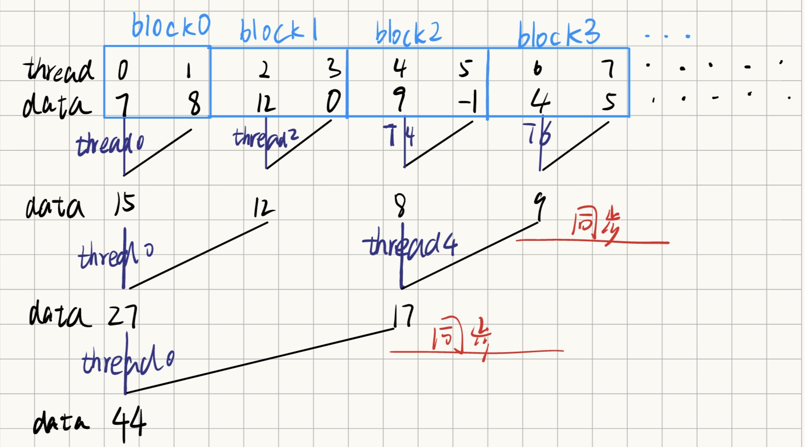
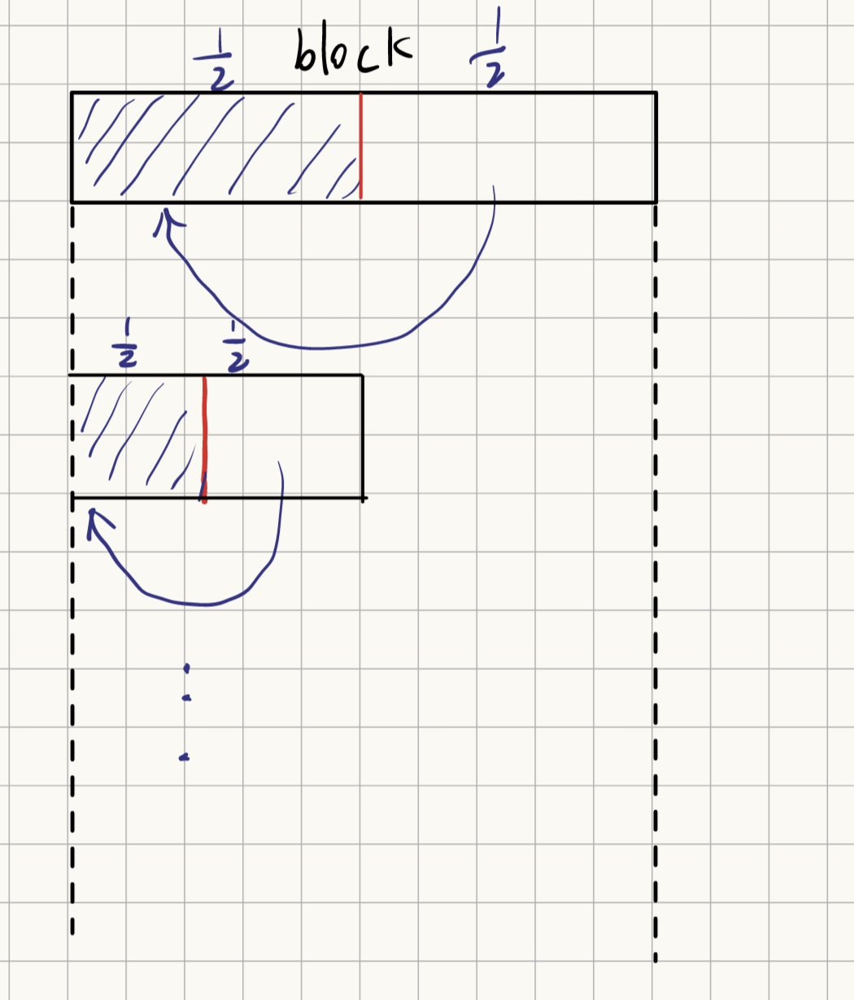

参考资料:英伟达官方资料
视频【CUDA】Reduce规约求和
【CUDA】硬件与工具探索合集（更新ing）
Reduction 0: Global Memory
思考路径

1 2 3 4 5 6 7 8 9 10 11 12 13 14 15 16 17 18 19 20 21 22 23 24 25 26 27 28 29 30 31 32 33 34 35 36 37 38 39 40 41 42 43 44 45 46 47 48 49 50 51 52 53 54 55 56 57 58 59 60 61 62 63 64 65 66 67 68 69 70 71 72 73 74 75 76 77 78 79 80 81 82 83 #include <stdio.h> #include <stdlib.h> #define ThreadPerBlock 256 #define N 32*1024*1024 __global__ void reduction (float * a,float * res) int tidx = blockIdx.x*blockDim.x + threadIdx.x; for (int len=1 ;len<blockDim.x;len*=2 ) { if (threadIdx.x%(len*2 )==0 ) { a[tidx]+=a[tidx+len]; } __syncthreads(); } if (threadIdx.x==0 ) res[blockIdx.x]=a[blockIdx.x*blockDim.x]; } void check (float * a,float *b,int n) for (int i=0 ;i<n;i++) { if (fabs (a[i]-b[i])>0.0001 ) printf ("%lf" ,b[i]); } } int main () float * input,*output,*cuda_res; float * c_input,*c_output; int BlockNum = N/ThreadPerBlock; input = (float *)malloc (sizeof (float )*N); output = (float *)malloc (sizeof (float )*BlockNum); cuda_res = (float *)malloc (sizeof (float )*BlockNum); cudaMalloc ((void **)&c_input,sizeof (float )*N); cudaMalloc ((void **)&c_output,sizeof (float )*BlockNum); for (int i=0 ;i<N;i++) { input[i] = rand () % 100 ; } cudaMemcpy (c_input,input,N*sizeof (float ),cudaMemcpyHostToDevice); reduction<<<BlockNum,ThreadPerBlock>>>(c_input,c_output); cudaMemcpy (cuda_res,c_output,sizeof (float )*BlockNum,cudaMemcpyDeviceToHost); for (int i=0 ;i<BlockNum;i++) { float s=0 ; for (int j=0 ;j<ThreadPerBlock;j++) { int idx = i*ThreadPerBlock+j; s+=input[idx]; } output[i]=s; } check (output,cuda_res,BlockNum); free (input); free (output); free (cuda_res); cudaFree (c_input); cudaFree (c_output); return 0 ; }
存在的性能问题
访存问题
内存类型
物理位置
作用域
生命周期
访问特性
寄存器
片上
线程私有
线程执行期间
最快，无延迟，无冲突
共享内存 片上 线程块内所有线程 线程块执行期间 快，可编程缓存，有 bank 冲突
L2 缓存
片上
所有线程
全局
自动缓存全局/本地/常量/纹理访问
本地内存
片外（显存）
线程私有
线程执行期间
慢，但编译器自动管理
常量内存
片外（但被 L1/L2 缓存）
所有线程
全局
只读，广播机制，延迟低
纹理内存
片外（但被 L1/L2 缓存）
所有线程
全局
只读，硬件滤波，地址对齐
全局内存 片外（显存） 所有线程 全局 容量大，延迟高，需合并访问
我们采用global memory实现规约求和，会导致大量的访问显存请求，因此时间会很长。
Warp Divergence
1 2 3 4 if (threadIdx.x%(len*2 )==0 ){ a[tidx]+=a[tidx+len]; }
同一个Wrap中只有部分并且分散的线程在工作 -----------> 考虑换成集中的一部分线程工作
Bank Conflict
为了提高内存读写带宽，共享内存被分为了32块等大，每一块称为Bank，由于一个wrap也有32个线程，因此可以一个线程对应一个Bank。
在硬件层面，GPU 访问全局内存不是一个字节一个字节读的，而是按块读取 的（通常是 32 字节或 128 字节的内存段）。当一个 Warp 的 32 个线程发起内存读取请求时，硬件会检查这 32 个地址。如果这些地址正好落在一个或两个连续的内存段内，硬件就会把它们**合并（Coalesce）**成 1 到 2 次内存事务（Memory Transaction）。
1 2 3 4 if (threadIdx.x%(len*2 )==0 ){ a[tidx]+=a[tidx+len]; }
当len==1的时，会发现一个线程束的访存是间隔的，一次访存事务只有一半的数据有用。
idle线程
并不是所有线程都处于忙碌状态
Reduction 1: Shared Memory
解决Reduction 0 的访存问题，改用shared memory实现
1 2 3 4 5 6 7 8 9 10 11 12 13 14 15 16 17 18 19 20 __global__ void reduction (float * a,float * res) __shared__ float shared[ThreadsPerBlock]; int tidx = blockIdx.x*blockDim.x + threadIdx.x; shared[threadIdx.x] = a[tidx]; __syncthreads(); for (int len=1 ;len<blockDim.x;len*=2 ) { if (threadIdx.x%(len*2 )==0 ) { shared[threadIdx.x]+=shared[threadIdx.x+len]; } __syncthreads(); } if (threadIdx.x==0 ) res[blockIdx.x]=shared[threadIdx.x]; }
只改善了reduction 0 的访存问题
Wrap Divergence 与 Bank Conflict
它们的本质，都是“多个并行执行单元，同时请求访问同一个无法并行处理的资源”所导致的串行化现象。
Warp Divergence：控制冲突
现象：在一个Warp（32个线程）中，如果遇到 if-else 或循环等分支语句，不同线程走了不同的路径。GPU会先执行 if 路径（此时走 else 的线程闲置），再执行 else 路径（此时走 if 的线程闲置）。这导致这32个线程实际上是串行 执行了两次，而非并行。
造成上面现象的原因是SIMD（单指令多数据）执行模型与分支预测的缺失
GPU的核心是一个控制单元 同时驱动32个算术逻辑单元 （SIMD）。在任何一个时钟周期，所有32个单元只能执行同一条指令 ，而,Wrap是SIMD的执行单元。
当遇到分支时，硬件无法让一部分单元执行A指令，另一部分执行B指令。唯一的办法就是时间上串行 ：先让所有单元都执行A（不相关的单元静默），再让所有单元都执行B。
所以，冲突的资源是 “控制逻辑/指令分发单元” 。多个线程不同的控制流需求，争抢同一个指令发射端口，导致串行化。
Wrap是执行单元，block是资源分配与管理单元。wrap里面的线程要执行同一条指令，但是block的多个wrap可以执行不同的指令，因此解决wrap divergence的其中一个方式就是，尽量让分支条件按 Warp 对齐
Bank Conflict：内存冲突
现象：共享内存被划分为32个同样大小的Bank（存储体）。当一个Warp中的多个线程同时访问 同一个Bank中不同地址 的数据时，这些访问会被串行化。如果32个线程访问的是32个不同Bank，则一次完成；如果都访问同一个Bank，则32次串行完成。
本质 ：多端口存储器的物理限制与高带宽需求的矛盾。
为了提供高带宽，共享内存被设计成多Bank交叉访问 。理想情况下，每个Bank可以独立、并行地响应一个请求。
但物理上，每个Bank只有一个读/写端口 。如果一个Bank在同一时刻收到多个请求（即使地址不同），它无法同时处理。唯一的办法就是时间上串行 。
所以，冲突的资源是 “Bank的访问端口” 。多个线程并发的内存请求，争抢同一个存储体的物理端口，导致串行化。
Reduction 2: Wrap Divergence
我的做法
通过将分支条件按照wrap对齐，解决wrap divergence

由于block中有256/32=8个wrap,我们可以让分支条件按照wrap对齐,即将block分为等大的两部分,让其中一部分A负责与另一部分B求和,然后对A同样处理
1 2 3 4 5 6 7 8 9 10 11 12 13 14 15 16 17 18 19 20 21 22 23 24 __global__ void reduction (float * a,float * res) __shared__ float shared[ThreadsPerBlock]; int tidx = blockIdx.x*blockDim.x + threadIdx.x; shared[threadIdx.x] = a[tidx]; __syncthreads(); for (int len = ThreadsPerBlock/2 ; len>=1 ;len/=2 ) { if (threadIdx.x<len) { shared[threadIdx.x]+=shared[threadIdx.x+len]; } __syncthreads(); } if (threadIdx.x==0 ) res[blockIdx.x]=shared[threadIdx.x]; }
官方做法
采用交错规约，步长从1到ThreadsPerBlock/2
1 2 3 4 5 6 7 8 9 10 11 12 13 14 15 16 17 18 19 20 21 __global__ void reduction (float * a,float * res) __shared__ float shared[ThreadsPerBlock]; int tidx = blockIdx.x*blockDim.x + threadIdx.x; shared[threadIdx.x] = a[tidx]; __syncthreads(); for (int len = 1 ; len < blockDim.x; len *= 2 ) { int index = 2 * len * threadIdx.x; if (index < blockDim.x) { shared[index] += shared[index + len]; } __syncthreads(); } if (threadIdx.x==0 ) res[blockIdx.x]=shared[threadIdx.x]; }
Reduction 3: Bank Conflict
Reduction2中的官方做法 存在bank conflict
官方做法shared[index] += shared[index + len],index = 2 * len * threadIdx.x
在第一次循环中0号和16号发生bank conflict
然后就改成了reduction2我的做法 原来我是天才来着
1 2 3 4 5 6 7 8 9 10 11 12 13 14 15 16 17 18 19 20 21 22 23 __global__ void reduction (float * a,float * res) __shared__ float shared[ThreadsPerBlock]; int tidx = blockIdx.x*blockDim.x + threadIdx.x; shared[threadIdx.x] = a[tidx]; __syncthreads(); for (int len = ThreadsPerBlock/2 ; len>=1 ;len/=2 ) { if (threadIdx.x<len) { shared[threadIdx.x]+=shared[threadIdx.x+len]; } __syncthreads(); } if (threadIdx.x==0 ) res[blockIdx.x]=shared[threadIdx.x];
Reduction 4: Idle Thread
减少线程数量，解决Idle线程
planA
减少block数量,保持block中线程数量不变
1 2 3 4 5 6 7 8 9 10 11 12 13 14 15 16 17 18 19 20 21 22 23 24 25 26 27 28 29 30 31 32 33 34 35 36 37 38 39 40 41 42 43 44 45 46 47 48 49 50 51 52 53 54 55 56 57 58 59 60 61 62 63 64 65 66 67 68 69 70 71 72 73 74 75 76 77 78 79 80 81 82 83 84 85 86 87 88 89 90 #include <stdio.h> #include <stdlib.h> #define ThreadsPerBlock 256 #define N 32*1024*1024 __global__ void reduction (float * a,float * res) __shared__ float shared[ThreadsPerBlock]; int tidx1 = blockIdx.x*blockDim.x + threadIdx.x; int tidx2 = tidx1 + gridDim.x; shared[threadIdx.x] = a[tidx1]+a[tidx2]; __syncthreads(); for (int len = ThreadsPerBlock/2 ; len>=1 ;len/=2 ) { if (threadIdx.x<len) { shared[threadIdx.x]+=shared[threadIdx.x+len]; } __syncthreads(); } if (threadIdx.x==0 ) res[blockIdx.x]=shared[threadIdx.x]; } void check (float * a,float *b,int n) for (int i=0 ;i<n;i++) { if (fabs (a[i]-b[i])>0.0001 ) printf ("%lf" ,b[i]); } } int main () float * input,*output,*cuda_res; float * c_input,*c_output; int BlockNum = N/ThreadsPerBlock/2 ; input = (float *)malloc (sizeof (float )*N); output = (float *)malloc (sizeof (float )*BlockNum); cuda_res = (float *)malloc (sizeof (float )*BlockNum); cudaMalloc ((void **)&c_input,sizeof (float )*N); cudaMalloc ((void **)&c_output,sizeof (float )*BlockNum); for (int i=0 ;i<N;i++) { input[i] = rand () % 100 ; } cudaMemcpy (c_input,input,N*sizeof (float ),cudaMemcpyHostToDevice); reduction<<<BlockNum,ThreadsPerBlock>>>(c_input,c_output); cudaMemcpy (cuda_res,c_output,sizeof (float )*BlockNum,cudaMemcpyDeviceToHost); for (int i=0 ;i<BlockNum;i++) { float s=0 ; for (int j=0 ;j<ThreadsPerBlock;j++) { int idx = i*ThreadsPerBlock+j; s+=input[idx]; s+=input[idx+BlockNum]; } output[i]=s; } check (output,cuda_res,BlockNum); free (input); free (output); free (cuda_res); cudaFree (c_input); cudaFree (c_output); return 0 ; }
planB
减少block中线程的数量,保持block数量不变
1 2 3 4 5 6 7 8 9 10 11 12 13 14 15 16 17 18 19 20 21 22 23 24 25 26 27 28 29 30 31 32 33 34 35 36 37 38 39 40 41 42 43 44 45 46 47 48 49 50 51 52 53 54 55 56 57 58 59 60 61 62 63 64 65 66 67 68 69 70 71 72 73 74 75 76 77 78 79 80 81 82 83 84 85 86 87 88 89 90 #include <stdio.h> #include <stdlib.h> #define ThreadsPerBlock 256/2 #define N 32*1024*1024 __global__ void reduction (float * a,float * res) __shared__ float shared[ThreadsPerBlock]; int tidx1 = blockIdx.x*blockDim.x + threadIdx.x; int tidx2 = tidx1+gridDim.x; shared[threadIdx.x] = a[tidx1]+a[tidx2]; __syncthreads(); for (int len = ThreadsPerBlock/2 ; len>=1 ;len/=2 ) { if (threadIdx.x<len) { shared[threadIdx.x]+=shared[threadIdx.x+len]; } __syncthreads(); } if (threadIdx.x==0 ) res[blockIdx.x]=shared[threadIdx.x]; } void check (float * a,float *b,int n) for (int i=0 ;i<n;i++) { if (fabs (a[i]-b[i])>0.0001 ) printf ("%lf" ,b[i]); } } int main () float * input,*output,*cuda_res; float * c_input,*c_output; int BlockNum = N/ThreadsPerBlock*2 ; input = (float *)malloc (sizeof (float )*N); output = (float *)malloc (sizeof (float )*BlockNum); cuda_res = (float *)malloc (sizeof (float )*BlockNum); cudaMalloc ((void **)&c_input,sizeof (float )*N); cudaMalloc ((void **)&c_output,sizeof (float )*BlockNum); for (int i=0 ;i<N;i++) { input[i] = rand () % 100 ; } cudaMemcpy (c_input,input,N*sizeof (float ),cudaMemcpyHostToDevice); reduction<<<BlockNum,ThreadsPerBlock>>>(c_input,c_output); cudaMemcpy (cuda_res,c_output,sizeof (float )*BlockNum,cudaMemcpyDeviceToHost); for (int i=0 ;i<BlockNum;i++) { float s=0 ; for (int j=0 ;j<ThreadsPerBlock;j++) { int idx = i*ThreadsPerBlock+j; s+=input[idx]+input[idx+BlockNum]; } output[i]=s; } check (output,cuda_res,BlockNum); free (input); free (output); free (cuda_res); cudaFree (c_input); cudaFree (c_output); return 0 ; }
还有一种
1 2 3 4 5 6 7 8 9 10 11 12 13 14 15 16 17 18 19 20 21 22 23 24 25 26 27 28 29 30 31 32 33 34 35 36 37 38 39 40 41 42 43 44 45 46 47 48 49 50 51 52 53 54 55 56 57 58 59 60 61 62 63 64 65 66 67 68 69 70 71 72 73 74 75 76 77 78 79 80 81 82 83 84 85 86 87 88 #include <stdio.h> #include <stdlib.h> #define ThreadsPerBlock 256/2 #define N 32*1024*1024 __global__ void reduction (float * a,float * res) __shared__ float shared[ThreadsPerBlock]; int tidx1 = blockIdx.x*blockDim.x*2 + threadIdx.x; int tidx2 = tidx1+blockDim.x; shared[threadIdx.x] = a[tidx1]+a[tidx2]; __syncthreads(); for (int len = ThreadsPerBlock/2 ; len>=1 ;len/=2 ) { if (threadIdx.x<len) { shared[threadIdx.x]+=shared[threadIdx.x+len]; } __syncthreads(); } if (threadIdx.x==0 ) res[blockIdx.x]=shared[threadIdx.x]; } void check (float * a,float *b,int n) for (int i=0 ;i<n;i++) { if (fabs (a[i]-b[i])>0.0001 ) printf ("%lf" ,b[i]); } } int main () float * input,*output,*cuda_res; float * c_input,*c_output; int BlockNum = N/ThreadsPerBlock*2 ; input = (float *)malloc (sizeof (float )*N); output = (float *)malloc (sizeof (float )*BlockNum); cuda_res = (float *)malloc (sizeof (float )*BlockNum); cudaMalloc ((void **)&c_input,sizeof (float )*N); cudaMalloc ((void **)&c_output,sizeof (float )*BlockNum); for (int i=0 ;i<N;i++) { input[i] = rand () % 100 ; } cudaMemcpy (c_input,input,N*sizeof (float ),cudaMemcpyHostToDevice); reduction<<<BlockNum,ThreadsPerBlock>>>(c_input,c_output); cudaMemcpy (cuda_res,c_output,sizeof (float )*BlockNum,cudaMemcpyDeviceToHost); for (int i=0 ;i<BlockNum;i++) { float s=0 ; for (int j=0 ;j<ThreadsPerBlock;j++) { int idx = i*ThreadsPerBlock*2 +j; s+=input[idx]+input[idx+ThreadsPerBlock]; } output[i]=s; } check (output,cuda_res,BlockNum); free (input); free (output); free (cuda_res); cudaFree (c_input); cudaFree (c_output); return 0 ; }
Reduction 5: 展开最后一维减少同步
Warp 内线程天然同步，但在使用 Warp 级函数（如 __shfl_sync、__ballot_sync）时，仍需显式调用 __syncwarp() 来保证数据写入共享内存或全局内存后的可见性。
__syncthreads() 是 CUDA 中的块内线程同步 函数。它强制一个线程块（block）内的所有线程必须执行到同一位置，才能继续往后执行。
因此我们可以取消掉少于wrap线程数量的同步
错误
1 2 3 4 5 6 7 8 9 10 11 12 13 14 15 16 17 18 19 20 21 22 23 24 25 26 27 28 29 30 31 32 #include <stdio.h> #include <stdlib.h> #define ThreadsPerBlock 256 #define N 32*1024*1024 __global__ void reduction (float * a,float * res) __shared__ float shared[ThreadsPerBlock]; int tidx1 = blockIdx.x*blockDim.x + threadIdx.x; int tidx2 = tidx1 + gridDim.x; shared[threadIdx.x] = a[tidx1]+a[tidx2]; __syncthreads(); int len = 0 ; for ( len = ThreadsPerBlock/2 ; len>=1 ;len/=2 ) { if (threadIdx.x<len) { shared[threadIdx.x]+=shared[threadIdx.x+len]; } if (len>16 ) __syncthreads(); } if (threadIdx.x==0 ) res[blockIdx.x]=shared[threadIdx.x]; }
或者
1 2 3 4 5 6 7 8 9 10 11 12 13 14 15 16 17 18 19 20 21 22 23 24 25 26 27 28 29 30 __global__ void reduction (float * a,float * res) __shared__ float shared[ThreadsPerBlock]; int tidx1 = blockIdx.x*blockDim.x + threadIdx.x; int tidx2 = tidx1 + gridDim.x; shared[threadIdx.x] = a[tidx1]+a[tidx2]; __syncthreads(); for (int len = ThreadsPerBlock/2 ; len>=32 ;len/=2 ) { if (threadIdx.x<len) { shared[threadIdx.x]+=shared[threadIdx.x+len]; } __syncthreads(); } if (threadIdx.x<16 ) { shared[threadIdx.x]+=shared[threadIdx.x+16 ]; shared[threadIdx.x]+=shared[threadIdx.x+ 8 ]; shared[threadIdx.x]+=shared[threadIdx.x+ 4 ]; shared[threadIdx.x]+=shared[threadIdx.x+ 2 ]; shared[threadIdx.x]+=shared[threadIdx.x+ 1 ]; } if (threadIdx.x==0 ) res[blockIdx.x]=shared[threadIdx.x]; }
做法 1 错误原因：编译器过度优化导致的数据不一致（数据可见性问题）
如果不加 __syncthreads()，编译器为了提速，会把 shared 内存里的值直接缓存在寄存器（Register）里 。
当 len = 2 时，线程 0 需要读取 shared[2] 的值。
但是线程 0 会觉得：“我刚才读过 shared 内存了，直接用我寄存器里的旧值吧”，它根本不会去内存里拿线程 2 刚刚更新进去的新值 。
做法 2 错误原因：编译器过度优化导致的数据不一致（数据可见性问题）
对于线程 0：
算 +16 时，它把 shared[0] 的结果存在了寄存器里。
算 +8 时，它需要读 shared[8]。但此时原本负责更新 shared[8] 的线程 8 可能也刚刚把结果算完并缓存在它自己的寄存器里，还没来得及写回共享内存！
于是，线程 0 读到了一个陈旧的 shared[8]，最终结果全错。
解决方式
在同一 Warp 内省略同步时，必须加上 volatile 关键字强制编译器每次都去读写内存；或者在较新的 CUDA 中，直接使用轻量级的 __syncwarp()。
1 2 3 4 5 6 7 8 9 10 11 12 13 14 15 16 17 18 19 20 21 22 23 24 25 __global__ void reduction (float * a, float * res) volatile __shared__ float shared[ThreadsPerBlock]; int tidx1 = blockIdx.x * blockDim.x + threadIdx.x; int tidx2 = tidx1 + gridDim.x; shared[threadIdx.x] = a[tidx1] + a[tidx2]; __syncthreads(); for (int len = ThreadsPerBlock/2 ; len >= 1 ; len /= 2 ) { if (threadIdx.x < len) { shared[threadIdx.x]+=shared[threadIdx.x+len]; } if (len > 16 ) { __syncthreads(); } } if (threadIdx.x == 0 ) res[blockIdx.x] = shared[0 ]; }
1 2 3 4 5 6 7 8 9 10 11 12 13 14 15 16 17 18 19 20 21 22 23 24 25 26 27 28 29 30 31 32 __global__ void reduction (float * a,float * res) volatile __shared__ float shared[ThreadsPerBlock]; int tidx1 = blockIdx.x*blockDim.x + threadIdx.x; int tidx2 = tidx1 + gridDim.x; shared[threadIdx.x] = a[tidx1]+a[tidx2]; __syncthreads(); for (int len = ThreadsPerBlock/2 ; len>=32 ;len/=2 ) { if (threadIdx.x<len) { shared[threadIdx.x]+=shared[threadIdx.x+len]; } __syncthreads(); } if (threadIdx.x < 32 ) { shared[threadIdx.x] += shared[threadIdx.x + 16 ]; shared[threadIdx.x] += shared[threadIdx.x + 8 ]; shared[threadIdx.x] += shared[threadIdx.x + 4 ]; shared[threadIdx.x] += shared[threadIdx.x + 2 ]; shared[threadIdx.x] += shared[threadIdx.x + 1 ]; } if (threadIdx.x==0 ) res[blockIdx.x] = shared[0 ]; }
Reduction 6: 完全展开循环
很暴力的做法
1 2 3 4 5 6 7 8 9 10 11 12 13 14 15 16 17 18 19 20 21 22 23 24 25 26 27 28 29 30 31 32 33 34 35 36 37 38 39 40 41 42 43 __device__ void add (volatile float * shared,int tdx) if (tdx<ThreadsPerBlock/2 ) { shared[tdx]+=shared[tdx+ThreadsPerBlock/2 ]; } __syncthreads(); if (tdx<ThreadsPerBlock/4 ) { shared[tdx]+=shared[tdx+ThreadsPerBlock/4 ]; } __syncthreads(); if (tdx<ThreadsPerBlock/8 ) { shared[tdx]+=shared[tdx+ThreadsPerBlock/8 ]; } __syncthreads(); if (tdx < 32 ) { shared[tdx] += shared[tdx + 16 ]; shared[tdx] += shared[tdx + 8 ]; shared[tdx] += shared[tdx + 4 ]; shared[tdx] += shared[tdx + 2 ]; shared[tdx] += shared[tdx + 1 ]; } } __global__ void reduction (float * a,float * res) volatile __shared__ float shared[ThreadsPerBlock]; int tidx1 = blockIdx.x*blockDim.x + threadIdx.x; int tidx2 = tidx1 + gridDim.x; shared[threadIdx.x] = a[tidx1]+a[tidx2]; __syncthreads(); add (shared,threadIdx.x); if (threadIdx.x==0 ) res[blockIdx.x] = shared[0 ]; }
但官方的做法不是这样的而是如下添加了几个判断:
1 2 3 4 5 6 7 8 9 10 11 12 13 14 15 16 17 18 19 20 21 22 23 24 25 26 27 28 29 30 31 32 33 34 35 36 37 38 39 40 41 42 43 44 45 46 template <int THREADSPERNUM>__device__ void add (volatile float * shared,int tdx) if (THREADSPERNUM>=512 ) { if (tdx<256 ) { shared[tdx]+=shared[tdx+256 ]; } } if (THREADSPERNUM>=256 ) { if (tdx<128 ) { shared[tdx]+=shared[tdx+128 ]; } } __syncthreads(); if (THREADSPERNUM>=128 ) { if (tdx<64 ) { shared[tdx]+=shared[tdx+64 ]; } } __syncthreads(); if (THREADSPERNUM>=64 ) { if (tdx<32 ) { shared[tdx]+=shared[tdx+32 ]; } } __syncthreads(); if (tdx < 32 ) { shared[tdx] += shared[tdx + 16 ]; shared[tdx] += shared[tdx + 8 ]; shared[tdx] += shared[tdx + 4 ]; shared[tdx] += shared[tdx + 2 ]; shared[tdx] += shared[tdx + 1 ]; } }
这里是因为要适配不同数目的ThreadsPerBlock
#pragma unroll
#pragma unroll 是 C/C++（尤其在 CUDA 编程中极其常用）的一个编译器指令（Compiler Directive） 。它的核心作用是：告诉编译器将紧跟其后的 for 或 while 循环展开，用顺序执行的代码替换掉循环结构。
假设你写了这样一段代码：
1 2 3 4 #pragma unroll for (int i = 0 ; i < 4 ; i++) { a[i] = b[i] + c[i]; }
编译器在编译时，根本不会生成循环指令，而是直接把它“翻译”成这样：
1 2 3 4 5 a[0 ] = b[0 ] + c[0 ]; a[1 ] = b[1 ] + c[1 ]; a[2 ] = b[2 ] + c[2 ]; a[3 ] = b[3 ] + c[3 ];
在 CUDA 这种对性能极其敏感的场景下，展开循环可以带来显著的提速：
消除循环开销（Loop Overhead）： 正常的循环需要做三件事：计数器加一（i++）、比较边界（i < 4）、条件跳转（跳转回循环开头）。展开后，这些控制指令全部消失了，GPU 的计算单元可以 100% 专注在真正的数学计算上。增加指令级并行度（Instruction-Level Parallelism, ILP）： 当代码变成线性的顺序指令后，编译器能一眼看到 a[0] 和 a[1] 的计算是完全独立的。现代 GPU 可以将这些独立的指令重叠执行（流水线掩盖延迟）。极致的内存与寄存器优化： 由于变量 i 变成了编译期已知的常量（0, 1, 2, 3），编译器可以直接为它们分配固定的寄存器。更厉害的是，编译器如果发现你在连续读取内存，它会自动使用向量化加载指令 （比如一次性读取 128 bit 的数据，而不是分 4 次读取 32 bit），极大地提升显存带宽利用率。
使用方式
用法 A：完全展开（默认）
1 2 #pragma unroll for (int i = 0 ; i < 32 ; i++) { ... }
条件： 循环的次数必须在编译期就是常量 （比如字面量 32，或者宏定义 #define LEN 32）。如果循环次数是一个运行时才传入的变量，编译器会忽略这个指令。
用法 B：部分展开（指定步长）
1 2 3 4 5 #pragma unroll 4 for (int i = 0 ; i < n; i++) { a[i] = b[i] + c[i]; }
这会把循环按照 4 的倍数进行展开。这种用法不需要知道总循环次数 n ，编译器会自动帮你处理好尾部的边界问题。
1 2 3 4 5 6 7 8 9 10 11 12 13 14 15 16 17 18 19 int i = 0 ;int limit = n - (n % 4 ); for (; i < limit; i += 4 ) { a[i] = b[i] + c[i]; a[i + 1 ] = b[i + 1 ] + c[i + 1 ]; a[i + 2 ] = b[i + 2 ] + c[i + 2 ]; a[i + 3 ] = b[i + 3 ] + c[i + 3 ]; } for (; i < n; i++) { a[i] = b[i] + c[i]; }
Reduction 7: 设置合适的block数量
探索Block的最佳数量设置
C++ 的模板是在**编译期（代码变成机器码之前）**就实例化的。因此使用模板而不是传入参数可以减少if分支的判断
1 2 3 4 5 6 7 8 9 10 11 12 13 14 15 16 17 18 19 20 21 22 23 24 25 26 27 28 29 30 31 32 33 34 35 36 37 38 39 40 41 42 43 44 45 46 47 48 49 50 51 52 53 54 55 56 57 58 59 60 61 62 63 64 65 66 67 68 69 70 71 72 73 74 75 76 77 78 79 80 81 82 83 84 85 86 87 88 89 90 91 92 93 94 95 96 97 98 99 100 101 102 103 104 105 106 107 108 109 110 111 112 113 114 115 116 117 118 119 120 121 122 123 124 125 126 127 128 129 130 131 132 133 134 135 136 137 138 139 140 #include <stdio.h> #include <stdlib.h> #define ThreadsPerBlock 256 #define N 32*1024*1024 template <int THREADSPERNUM>__device__ void add (volatile float * shared,int tdx) if (THREADSPERNUM>=512 ) { if (tdx<256 ) { shared[tdx]+=shared[tdx+256 ]; } } if (THREADSPERNUM>=256 ) { if (tdx<128 ) { shared[tdx]+=shared[tdx+128 ]; } } __syncthreads(); if (THREADSPERNUM>=128 ) { if (tdx<64 ) { shared[tdx]+=shared[tdx+64 ]; } } __syncthreads(); if (THREADSPERNUM>=64 ) { if (tdx<32 ) { shared[tdx]+=shared[tdx+32 ]; } } __syncthreads(); if (tdx < 32 ) { shared[tdx] += shared[tdx + 16 ]; shared[tdx] += shared[tdx + 8 ]; shared[tdx] += shared[tdx + 4 ]; shared[tdx] += shared[tdx + 2 ]; shared[tdx] += shared[tdx + 1 ]; } } template <int BLOCKNUM,int NUMSPERTHREAD>__global__ void reduction (float * a,float * res) volatile __shared__ float shared[ThreadsPerBlock]; shared[threadIdx.x]=0 ; for (int i=0 ;i<NUMSPERTHREAD;i++) { int tidx = threadIdx.x+blockIdx.x*blockDim.x + i*BLOCKNUM*blockDim.x; shared[threadIdx.x] += a[tidx]; } __syncthreads(); add <ThreadsPerBlock>(shared,threadIdx.x); if (threadIdx.x==0 ) res[blockIdx.x] = shared[0 ]; } bool check (float * a,float *b,int n) for (int i=0 ;i<n;i++) { if (fabs (a[i]-b[i])>0.0001 ) return false ; } return true ; } int main () constexpr int BlockNum = 1024 ; constexpr int NumsPerThread = N/BlockNum/ThreadsPerBlock; float * input,*output,*cuda_res; float * c_input,*c_output; input = (float *)malloc (sizeof (float )*N); output = (float *)malloc (sizeof (float )*BlockNum); cuda_res = (float *)malloc (sizeof (float )*BlockNum); cudaMalloc ((void **)&c_input,sizeof (float )*N); cudaMalloc ((void **)&c_output,sizeof (float )*BlockNum); for (int i=0 ;i<N;i++) { input[i] = rand () % 100 ; } cudaMemcpy (c_input,input,N*sizeof (float ),cudaMemcpyHostToDevice); reduction<BlockNum,NumsPerThread><<<BlockNum,ThreadsPerBlock>>>(c_input,c_output); cudaMemcpy (cuda_res,c_output,sizeof (float )*BlockNum,cudaMemcpyDeviceToHost); for (int i=0 ;i<BlockNum;i++) { float s=0 ; for (int j=0 ;j<ThreadsPerBlock;j++) { int base_idx = i*ThreadsPerBlock+j; for (int k=0 ;k<NumsPerThread;k++) { s+=input[base_idx+k*BlockNum*ThreadsPerBlock]; } } output[i]=s; } if (check (output,cuda_res,BlockNum)) printf ("correct!\n" ); else printf ("incorrect!\n" ); free (input); free (output); free (cuda_res); cudaFree (c_input); cudaFree (c_output); return 0 ; }
Reduction 8: shuffle
相较于传统的共享内存（Shared Memory）规约，Shuffle 具有压倒性的优势：
零内存分配： 不需要申请 __shared__ 内存，允许同一个Warp（包含32个线程）内的线程直接读取彼此的寄存器数据 ，省去了极其宝贵的共享内存资源。零显式同步： 不需要写 __syncthreads() 或 __syncwarp()。Shuffle 指令本身就带有隐式的 Warp 内同步语义。极低延迟： 寄存器到寄存器的直接通信，速度远超共享内存的读写。无 Bank Conflict： 既然不用共享内存，自然就彻底告别了令人头疼的 Bank Conflict 问题。
使用方法
在现代 CUDA（Volta 架构之后）中，所有 Shuffle 指令都必须带 _sync 后缀，并要求传入一个 mask（掩码）来指定哪些线程参与操作。通常为了全 Warp 参与，掩码固定写为 $0xffffffff$。
这四个指令的函数签名大致相同，但数据流向完全不同：
__shfl_down_sync(mask, var, delta)：向下传（最常用于 Reduction）
作用： 当前线程去拿取 ID 比自己大 delta 的那个线程手里的 var 值作为返回值。越界处理： 如果加上 delta 超过了 31，值保持不变，返回自己的值。
__shfl_up_sync(mask, var, delta)：向上传（常用于 Prefix Sum / Scan）
作用： 当前线程去拿取 ID 比自己小 delta 的那个线程手里的 var 值作为返回值。
__shfl_sync(mask, var, srcLane)：广播（Broadcast）
作用： Warp 里的所有人，都去拿指定的那个 srcLane（比如 Lane 0）手里的 var 值。
__shfl_xor_sync(mask, var, laneMask)：蝴蝶交换（Butterfly Exchange）
作用： 当前线程会和另一个线程交换数据，那个线程的 ID 是 当前线程 ID ^ laneMask（按位异或）。
利用__shfl_down_sync(),将之前的代码进行优化:
1 2 3 4 5 6 7 8 9 10 11 12 13 14 15 16 17 18 19 20 21 22 23 24 25 26 27 28 29 30 31 32 33 34 35 36 37 38 39 template <int BLOCKNUM,int NUMSPERTHREAD>__global__ void reduction (float * a,float * res) float sum = 0.f ; for (int i=0 ;i<NUMSPERTHREAD;i++) { int tidx = threadIdx.x+blockIdx.x*blockDim.x + i*BLOCKNUM*blockDim.x; sum += a[tidx]; } sum+=__shfl_down_sync(0xffffffff ,sum,16 ); sum+=__shfl_down_sync(0xffffffff ,sum,8 ); sum+=__shfl_down_sync(0xffffffff ,sum,4 ); sum+=__shfl_down_sync(0xffffffff ,sum,2 ); sum+=__shfl_down_sync(0xffffffff ,sum,1 ); __shared__ float WrapSum[32 ]; int tidx = threadIdx.x; const int lanIdx = tidx%32 ; const int wrapIdx = tidx/32 ; const int wrapNum = ThreadsPerBlock/32 ; if (lanIdx==0 ) { WrapSum[wrapIdx]=sum; } __syncthreads(); if (wrapIdx==0 ) { sum=(lanIdx < wrapNum ? WrapSum[lanIdx]:0.f ); sum+=__shfl_down_sync(0xffffffff ,sum,16 ); sum+=__shfl_down_sync(0xffffffff ,sum,8 ); sum+=__shfl_down_sync(0xffffffff ,sum,4 ); sum+=__shfl_down_sync(0xffffffff ,sum,2 ); sum+=__shfl_down_sync(0xffffffff ,sum,1 ); } if (threadIdx.x==0 ) res[blockIdx.x] = sum; }